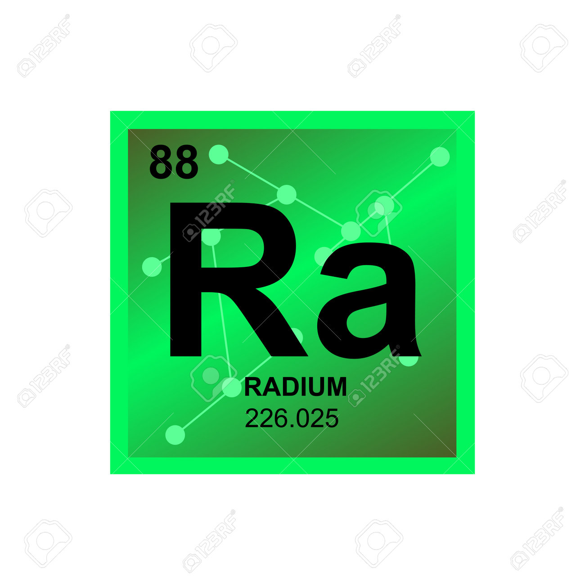
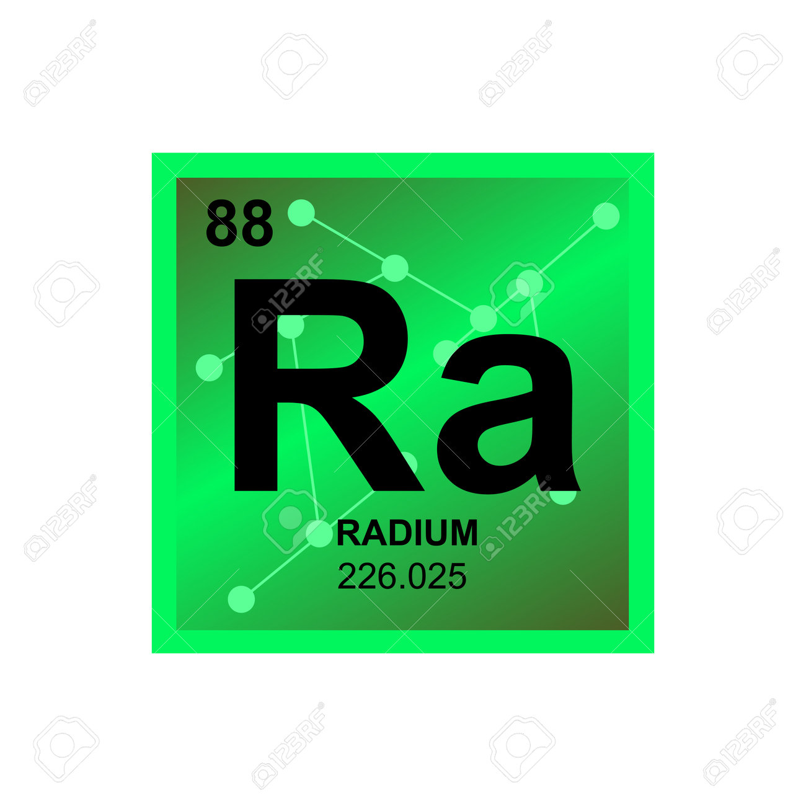

Linha do Tempo
- 1867 - Nascimento em Varsóvia, Polônia.
- 1895 - Casamento com Pierre Curie.
- 1903 - Nobel de Física por estudos em radioatividade.
- 1911 - Nobel de Química por descobertas do polônio e rádio.
- 1934 - Falecimento em Sancellemoz, França.
Citações
"Nada na vida deve ser temido, apenas compreendido. Agora é hora de compreender mais, para temer menos."
— Marie Curie
Galeria
 
